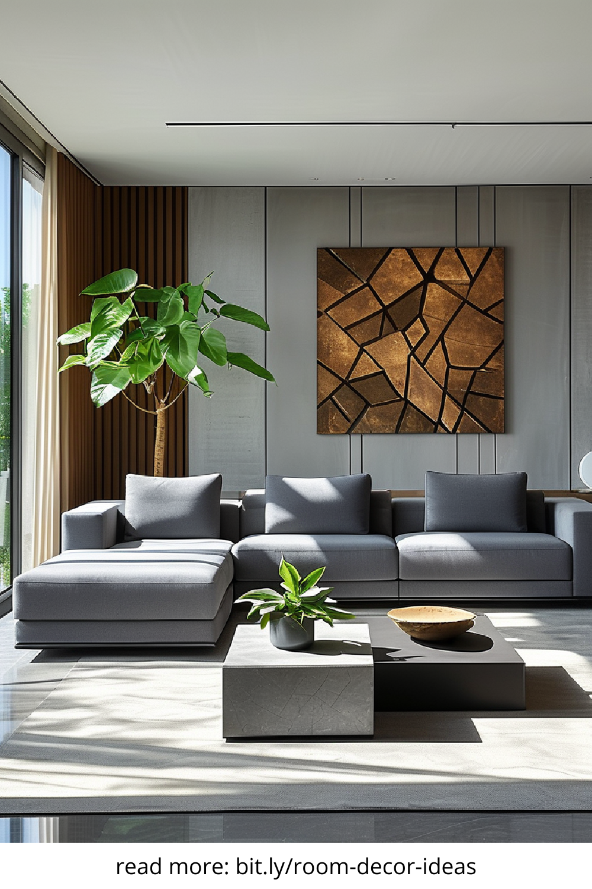
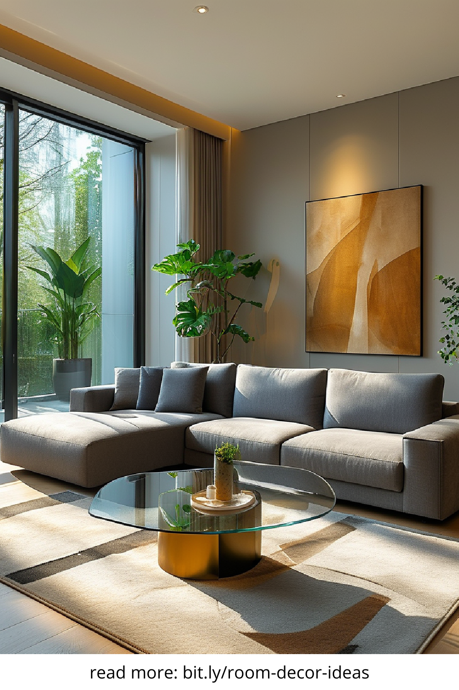
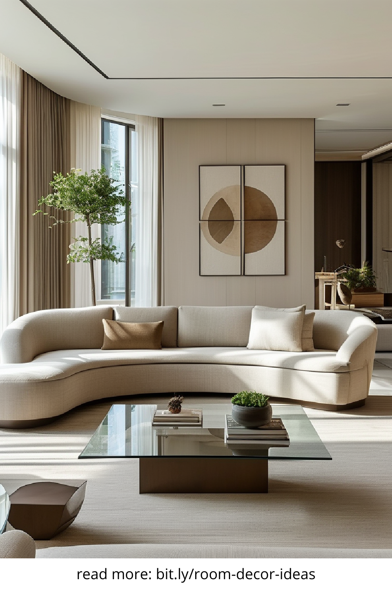
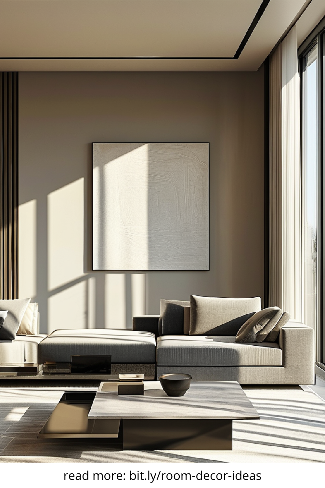

In the evolving world of interior design, the concept of a modern living room has taken center stage. It’s no longer just a space for family gatherings—it has become a multifunctional area that blends comfort, style, and technology. This transformation is driven by the need for simplicity, sustainability, and smart solutions that reflect modern lifestyles.
The core principle of any modern living room is minimalism. This doesn’t mean a lack of personality—it means intentionality. Every piece of furniture, lighting fixture, and decorative item should serve a purpose or elevate the overall look of the space. Clean lines, neutral tones, and open layouts define the aesthetic, allowing for a calm and clutter-free environment that still feels warm and inviting.
A defining element of the modern living room is seamless integration of technology. From smart lighting systems and voice-activated assistants to hidden charging stations and wireless audio setups, innovation plays a crucial role. These enhancements offer not only convenience but also help maintain a streamlined, cable-free appearance that’s consistent with contemporary design.
Today’s homeowners are more environmentally conscious than ever, and modern living rooms reflect that shift. Choosing sustainable materials like reclaimed wood, bamboo flooring, or organic textiles adds depth to the design while reducing environmental impact. Energy-efficient lighting and recycled decor elements further reinforce the commitment to a greener lifestyle without compromising on elegance.
One of the hallmarks of a modern living room is its open-concept design. By eliminating unnecessary walls and barriers, this layout promotes natural light, encourages social interaction, and maximizes usable space. It often merges seamlessly with the kitchen or dining area, creating a cohesive living experience that feels both expansive and intimate.
While modern living rooms share common themes, personalization is key. Whether it’s a bold piece of abstract art, a custom-designed coffee table, or a gallery wall of travel photos, adding unique touches ensures the space feels like home. The modern aesthetic thrives on contrast—mixing textures, patterns, and cultural influences in a way that’s still balanced and refined.
Neutral shades such as whites, grays, and beiges form the backbone of a modern living room color scheme, but that doesn’t mean you can’t experiment. Accents in emerald green, deep navy, or even soft blush can create focal points without overwhelming the space. These tones not only offer sophistication but also evoke a sense of calm, making the room a true haven of relaxation.
In a modern living room, furniture should do more than fill space—it should enhance it. Look for modular sofas, ergonomic lounge chairs, and multi-functional tables that offer both comfort and practicality. Low-profile designs with sleek finishes are popular, providing a chic look while ensuring ease of movement and functionality for modern-day activities.
Lighting is often the unsung hero of modern interior design. A mix of ambient, task, and accent lighting can transform the atmosphere of a living room. Whether it’s a sculptural floor lamp, recessed ceiling lights, or pendant fixtures over a side table, strategic lighting not only improves visibility but also elevates the aesthetic appeal of the entire space.
The modern living room is more than just a place to relax—it’s a carefully curated environment that mirrors the rhythms of contemporary life. By blending aesthetics with practicality, technology with comfort, and simplicity with personality, homeowners can create a space that is timeless, functional, and uniquely their own.
   